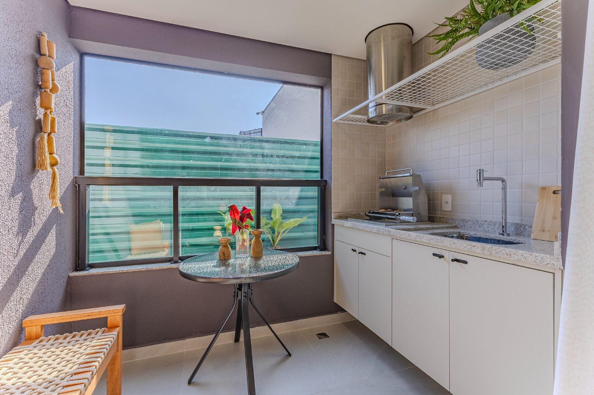

Arquitetura em vidro que silencia a rua e amplia o seu viver.
Envidraçamento de sacadas sob medida, coberturas de vidro, guarda-corpos e projetos especiais em Sorocaba e região. Execução própria com rigor técnico ABNT.

Obra Entregue · Sorocaba
Fechamento Panorâmico ABNT
Interativo · Deslize e Giro 90°
Sinta como a sua varanda se transforma.
Arraste o controle abaixo com o dedo para abrir ou fechar as folhas de vidro sobre uma varanda gourmet real.

Sistema deslizante sem rolamentos que travam, certificado pela norma ABNT NBR 16259/14.
Inclui ventilação permanente de segurança (NBR 13.303) para varandas com churrasqueira ou aquecedor.
Soluções Sob Medida
Especialidades da Murano
Transforme sua varanda em uma extensão silenciosa e climatizada da sala. Trabalhamos tanto com o sistema tradicional quanto com o sistema encapsulado sem rolamentos.

Máxima iluminação natural com bloqueio térmico e vedação estrutural. Ideal para valorizar áreas externas residenciais sem perder a vista do céu.

Fixação em torres de aço inox, bottons ou perfil oculto embutido, unindo segurança estrutural absoluta e transparência contínua.
Projetos de banho com roldanas aparentes de design italiano, box até o teto para retenção de vapor ou divisórias minimalistas em vidro Extra Clear.
Acabamento de precisão para interiores residenciais e comerciais: espelhos prata, bronze e fumê sem distorção óptica e esquadrias de vidro temperado sob medida.
Portfólio Verificado
Obras Reais Executadas
Produção Própria em Sorocaba
Sem intermediários. Usinagem, corte e montagem próprios na Vila Assis, garantindo precisão milimétrica e cumprimento rigoroso do prazo.
Normas ABNT NBR 16259 e 13.303
Total conformidade com os laudos exigidos pelos condomínios mais rigorosos de Sorocaba, Votorantim, Itu e Porto Feliz.
Nota 4.9 de 5.0 no Google
34 avaliações reais de clientes e arquitetos que comprovam a limpeza na instalação e o pós-venda ágil da nossa equipe.
Atendimento Direto
Solicite seu orçamento pelo WhatsApp
Toque na solução desejada e fale direto com a nossa equipe técnica em Sorocaba.